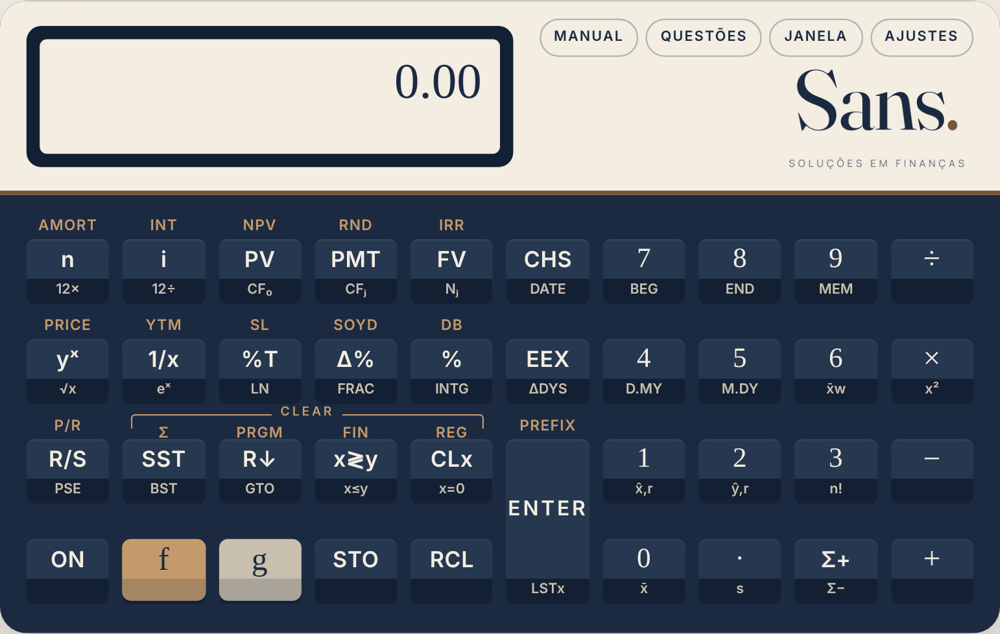
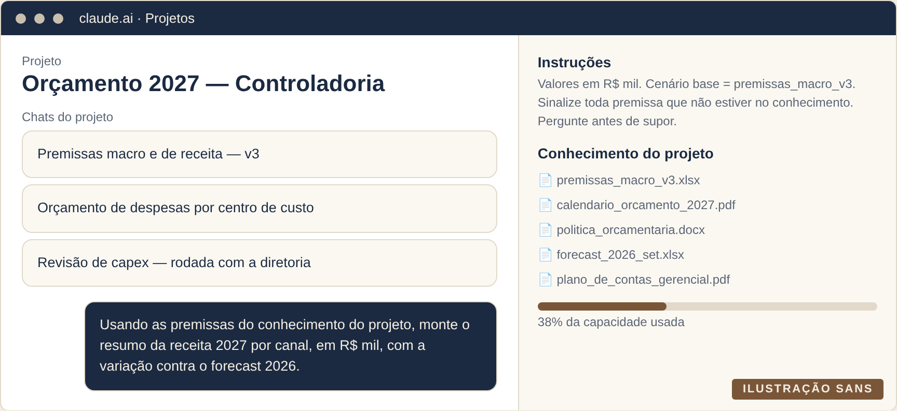
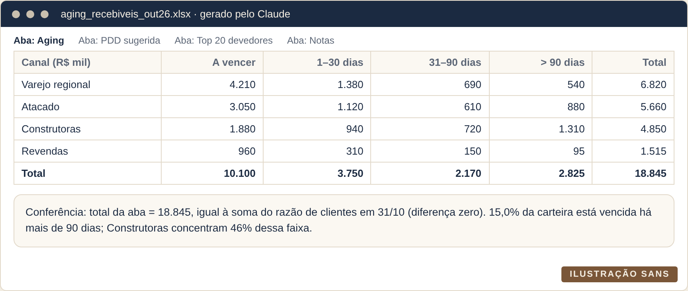
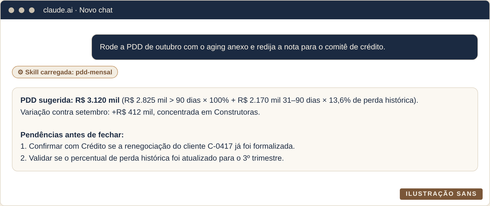

![Sans.]()
Abertura.
Todo mundo sabe calcular o ROE. Lucro líquido dividido pelo patrimônio líquido, uma linha na planilha, pronto. O problema é que o ROE sozinho é o placar do jogo: diz quem ganhou, mas não conta como o gol saiu.
Saber por que o ROE subiu ou caiu, e o que as outras camadas do balanço dizem sobre a saúde financeira da empresa, é o que separa o bom profissional daquele que só sabe nomear os indicadores. Margem, giro e dívida contam histórias bem diferentes para o mesmo número final.
Aprender em finanças tem muito disso: pegar um número que você já usa todo dia e desmontá-lo até enxergar as peças. Não é decorar fórmula nova. É olhar de novo para a fórmula velha, com mais perguntas.
O quiz de hoje tem uma questão exatamente sobre isso. E o clipping traz uma venda de R$ 12,7 bilhões em que o número da manchete e o cheque efetivamente pago são bem diferentes. Bom treino.
Quiz diário do Profissional de Finanças.
Quatro questões para testar seus conhecimentos em ética, análise de demonstrações, capital de giro e custo de capital, no estilo das principais certificações profissionais, como o CFA. Saiba mais sobre o CFA Program aqui.
Esta newsletter não tem nenhuma afiliação com o CFA Institute. As questões são originais, elaboradas pela Sans, com o objetivo de disseminar conteúdos relevantes para a comunidade de profissionais de finanças.
Três profissionais de uma gestora, todos sujeitos ao Code and Standards, viveram as situações abaixo:
- 1. Lorena, gestora de fundos e ativista ambiental, foi detida mais de uma vez por invadir a área de uma indústria durante protestos pacíficos, sempre fora do horário de trabalho.
- 2. Otávio, analista, declarou falência pessoal depois que o restaurante que mantinha com a família fechou. Não houve fraude nem ocultação de bens.
- 3. Caio, gestor de carteiras, costuma beber no almoço em dias úteis e volta ao escritório visivelmente alterado, tomando decisões de investimento à tarde.
Quais situações mais provavelmente violam o Standard sobre má conduta profissional?
Critério: a questão de ética segue o Code of Ethics and Standards of Professional Conduct do CFA Institute, documento público.
A Têxtil Monte Alegre (fictícia) mostra os dados abaixo, em R$ milhões. O ROE subiu de 8% para 10%. O que explica a melhora?
| Item | Ano 1 | Ano 2 |
|---|---|---|
| Receita líquida | 800 | 880 |
| Lucro líquido | 40 | 44 |
| Ativo total | 1.000 | 1.100 |
| Patrimônio líquido | 500 | 440 |
O Atacadista Boa Safra (fictício) recebe de um fornecedor a condição "2% de desconto se pagar em 10 dias; senão, valor cheio em 40 dias". A empresa tem uma linha de capital de giro disponível a 1,5% ao mês. A tesouraria deve:
Uma fabricante de embalagens de capital fechado quer estimar seu custo do capital próprio. A comparável listada Plásticos Ponte Alta (fictícia) tem beta alavancado de 1,30 e D/E de 0,50. A fabricante pretende operar com D/E de 1,00. Alíquota de IR/CS de 34% para ambas, taxa livre de risco de 11% e prêmio de mercado de 6%. Usando a fórmula de Hamada, o custo do capital próprio da fabricante é de aproximadamente:
Respostas comentadas no fim da edição.

Quer testar mais conhecimentos técnicos? Faça o teste com a calculadora RPN da Sans e pratique com cálculos envolvendo mercado de capitais e finanças corporativas, treinando estatística e matemática financeira. Há questões e a resolução passo a passo de cada exercício.
Clipping do dia.
Calote apertando o varejo, nota fiscal ganhando a cara do IBS e da CBS, Bolsa aliviada com o petróleo e uma venda bilionária que vale como aula de valuation.
Varejo
O calote virou a principal causa de recuperação judicial. Segundo o Monitor RGF-BizDoc, da RGF Associados, a inadimplência de clientes apareceu em 55% dos pedidos de recuperação judicial com justificativa identificável no 3º trimestre de 2026, contra 45% um ano antes. Queda de faturamento e custo do crédito aparecem em 16% cada. No varejo, eram 1.024 empresas em recuperação judicial no fim de setembro, e o estoque cresceu 18% em 12 meses. A lição para quem cuida de caixa: venda a prazo é empréstimo ao cliente, e o risco de crédito que você concede volta como risco de liquidez para você. Política de crédito, aging e provisão deixam de ser rotina de backoffice. Fonte: Mercado&Consumo, 10/11
Tributário
Nove modelos de nota fiscal já têm versão aprovada para IBS e CBS. A Receita Federal e o Comitê Gestor do IBS aprovaram, pelo Ato Técnico Conjunto nº 10, de 28 de outubro, a documentação técnica de nove modelos de documentos fiscais eletrônicos, entre eles NF-e, NFC-e, CT-e e NFCom, além da versão 1.71 da tabela cClassTrib. Um detalhe importante da matéria: aprovar o leiaute não define, sozinho, quando cada campo vira obrigatório nem quando começa o split payment; isso depende do cronograma de cada nota técnica. Para controladoria e fiscal, o recado é prático: o ERP e o cadastro de produtos precisam conversar com essas tabelas antes de 2027, e quem projeta caixa deve acompanhar o calendário do split payment, que muda o momento em que o imposto sai do caixa. Fonte: Contábeis, 09/11
Mercado de Capitais
Petróleo cai, Bolsa sobe. Na segunda-feira, o Ibovespa fechou em alta de 2,02%, aos 171.906 pontos, em dado preliminar. O empurrão veio de fora: o Brent caiu 5,85%, para US$ 92,57, e as bolsas americanas subiram mais de 2%. Aqui, Vale e grandes bancos puxaram a alta, com Santander subindo mais de 5%. O dólar fechou praticamente estável, a R$ 5,506, e os juros futuros recuaram. A ressalva da própria cobertura: a preocupação fiscal segue limitando o otimismo. Para quem orça 2027, vale guardar o lembrete: petróleo é premissa de inflação, e inflação é premissa de juro. Fonte: InfoMoney, 09/11
M&A
CSN vende a CSN Cimentos à chinesa Huaxin por R$ 12,7 bilhões. A CSN assinou no sábado (7) a venda de 99,99% da CSN Cimentos, dona de cerca de 21% do mercado brasileiro de cimento, segundo a Huaxin. O negócio avalia a empresa em R$ 12,7 bilhões, mas o pagamento previsto é de cerca de R$ 9,03 bilhões, valor acordado após ajustes de dívida e capital de giro. Do lado da compradora, o conselho autorizou buscar financiamento de até R$ 8,89 bilhões (70% do valor da empresa) e contratar derivativos para proteger a exposição ao real. O fechamento depende do Cade, da Aneel e de aprovações na China. A CSN diz que a operação faz parte da estratégia de reduzir a dívida. Fontes: Diário do Comércio, 09/11 e Empreende, 09/11
A lição de finanças corporativas. Manchete de M&A quase sempre fala em valor da empresa (enterprise value); o vendedor recebe o valor do equity, que é o EV menos a dívida líquida e mais ou menos os ajustes de capital de giro contra um nível de referência. Por isso a "venda de R$ 12,7 bilhões" vira um cheque de cerca de R$ 9 bilhões. Para o vendedor, o ganho de alavancagem vem dos dois lados: entra caixa e sai do balanço a dívida da controlada. Para o comprador, financiar 70% do EV com dívida em reais e fazer hedge cambial mostra que a estrutura de pagamento pesa tanto quanto o múltiplo na conta do retorno.
Claude na prática.
Três dicas independentes, da base ao avançado. Novembro é temporada de orçamento e de provisão de fim de ano, e as três conversam com isso. As figuras são ilustrações da Sans, não capturas de tela oficiais.
Projetos: um lugar só para o orçamento 2027
Por que usar. O ciclo de orçamento dura semanas e envolve dezenas de conversas: premissas macro, receita por canal, despesas por centro de custo, capex, a rodada final com a diretoria. Em chats avulsos, você reexplica as premissas em cada um e corre o risco de o Claude usar uma versão velha. Um Projeto do Claude reúne tudo num espaço de trabalho com duas peças que valem para todos os chats ali dentro: o conhecimento do projeto (documentos de referência) e as instruções do projeto (como o Claude deve trabalhar).
Como configurar.
- 1. Na barra lateral, abra Projects e clique em "+ New Project". Nome e descrição servem para você se organizar; o próprio Claude não os lê, então nada importante deve ficar só ali.
- 2. No painel de conhecimento, à direita, clique em "+" e suba a planilha de premissas vigente, o calendário do orçamento, a política orçamentária e o forecast mais recente.
- 3. Em "Set project instructions", escreva as regras do jogo: unidade, cenário base, o que fazer quando faltar premissa.
- 4. Abra um chat por frente de trabalho. Atenção: chats do mesmo projeto não compartilham contexto entre si; o que precisa valer para todos tem de estar no conhecimento.
- 5. Em planos Team e Enterprise, use "Share project" para dar ao time acesso de leitura ("Can view") ou edição ("Can edit").

O que esperar. Projetos estão disponíveis em todos os planos, inclusive o gratuito (com limite de cinco projetos). Nos planos pagos, quando o conhecimento se aproxima do limite de contexto, o Claude ativa automaticamente um modo de busca (RAG) que amplia a capacidade. Quando a premissa mudar, troque o arquivo no conhecimento, não só a mensagem no chat: é isso que evita a "versão 2 em um chat e versão 3 no outro".
"Usando apenas as premissas do conhecimento do projeto, monte o resumo da receita 2027 por canal, em R$ mil, com a variação contra o forecast 2026. Liste à parte qualquer número que você precisou estimar e por quê."
Fonte: How can I create and manage projects? — Claude Help Center
Criação de arquivos: do razão de clientes ao aging em Excel
Por que usar. Com a notícia do varejo ainda fresca: montar o aging de recebíveis costuma ser uma tarde de PROCV, tabela dinâmica e conferência. Com o recurso de criar e editar arquivos, o Claude roda código num ambiente isolado, lê o CSV ou a planilha que você enviar e devolve um arquivo Excel pronto para baixar, com abas, totais e notas. Também gera Word, PowerPoint, PDF e gráficos em PNG.
Como configurar. Nos planos Free, Pro e Max o recurso vem ligado; confira em Settings > Capabilities, na opção de execução de código e criação de arquivos ("Create and edit files" no layout novo). Em Team e Enterprise, quem controla é o administrador, em Organization settings > Capabilities. O limite é de 30 MB por arquivo, e criar arquivos consome mais da cota de uso do que um chat comum: vale pedir a entrega completa de uma vez, em vez de dez ajustes pequenos.
O que esperar. O ganho real está na conferência que você exige no prompt. Peça sempre que o total do aging bata com o saldo do razão e que a diferença apareça na resposta. Se não bater, o problema está na base (título duplicado, baixa não processada), não na fórmula, e isso aparece antes de o número circular.

"Anexei o razão de clientes de 31/10 em CSV. Gere um Excel com quatro abas: aging por canal (a vencer, 1–30, 31–90 e mais de 90 dias, em R$ mil), PDD pela política anexa, top 20 devedores e notas. Confira se o total do aging bate com o saldo do razão e informe a diferença. Não arredonde antes de somar."
Fonte: Create and edit files with Claude — Claude Help Center
Skills: a política de PDD virando procedimento
Por que usar. A provisão para devedores duvidosos segue a mesma receita todo mês: faixas do aging, percentuais de perda, exceções por renegociação, nota para o comitê. Se você reescreve essa receita no prompt a cada fechamento, ela é candidata a virar uma skill. Uma skill é uma pasta com instruções (e, se quiser, scripts e arquivos de apoio) que o Claude consulta sozinho quando o pedido combina com a descrição dela.
Como configurar. O recurso está nos planos Free, Pro, Max, Team e Enterprise, e exige a execução de código ligada. O coração da skill é um arquivo de instruções que começa com um cabeçalho em YAML com dois campos: o name (até 64 caracteres) e a description (até 200 caracteres), que é o que o Claude lê para decidir quando usar a skill. A pasta precisa ter o mesmo nome da skill e ser compactada num ZIP com a pasta na raiz. Depois do upload, ative em Customize > Skills.
---name: pdd-mensal description: Calcula a PDD mensal a partir do aging de recebíveis e redige a nota para o comitê de crédito. Use quando o pedido citar PDD, provisão, aging ou inadimplência.
---
- 1. Confirme a data-base e a unidade (R$ mil).
- 2. Use calculo_pdd.py para aplicar os percentuais da política.
- 3. Some e confira com o total do aging antes de comentar.
- 4. Liste exceções (renegociações, garantias) como pendências; nunca as assuma.

O que esperar. O cálculo que precisa bater sempre vai num script dentro da skill, e não numa frase de instrução: assim o percentual é aplicado do mesmo jeito em outubro e em março. Se a skill não for acionada, revise a description, incluindo as palavras que o time usa no pedido. E lembre que a skill entrega um rascunho técnico; a decisão sobre a provisão continua com o comitê.
"Rode a PDD de outubro com o aging anexo e redija a nota para o comitê de crédito, com a variação contra setembro e as pendências que precisam de confirmação da área de Crédito."
Fontes: How to create custom skills e Create and edit files with Claude — Claude Help Center
Mau uso do Claude: o que não fazer.
Três hábitos que gastam cota, contexto e, pior, credibilidade na hora de apresentar números.
Despejar a pasta inteira no projeto "por via das dúvidas". Doze versões da planilha de premissas, o orçamento de 2024, três atas de reunião e o manual do ERP. Parece prudente, mas o resultado é o oposto: o conhecimento do projeto enche, o Claude passa a buscar trechos em vez de enxergar tudo, e a premissa velha compete com a nova. Quando ele responde com o câmbio da v1, o erro não é dele; foi você que deixou a v1 lá. Mantenha no conhecimento só a versão vigente de cada documento e apague o resto.
Pedir o número e não pedir a conta. "Qual é a PDD de outubro?" gera um número. "Qual é a PDD de outubro, com a memória de cálculo e a conferência contra o aging?" gera um número que você consegue defender. Quem decide com base num número precisa saber de onde ele saiu, e esse caminho é parte da entrega. Se a resposta não o traz, o cálculo acaba refeito à mão, e a economia de tempo vira trabalho em dobro. Peça a memória de cálculo sempre e confira pelo menos os totais.
Reaproveitar o chat do mês passado para o fechamento novo. É tentador: o contexto "já está lá". Só que está lá junto com as correções de setembro, os números de setembro e as exceções de setembro. A conversa fica longa, cada mensagem nova consome mais, e o risco de um dado antigo contaminar a resposta cresce. Fechamento novo, chat novo. O que vale para todos os meses (política, plano de contas, formato) vai no conhecimento do projeto, que é justamente o lugar feito para isso.
O fio comum dos três erros: tratar o Claude como uma caixa onde se joga tudo e se aceita o que sai. Ele rende mais quando recebe pouco e certo, e quando você exige que mostre o trabalho.
Fontes: How can I create and manage projects? e Create and edit files with Claude — Claude Help Center
Respostas comentadas.
Gabarito: A
Standard I(D) — Misconduct, do Code of Ethics and Standards of Professional Conduct do CFA Institute. O Standard trata de conduta profissional com desonestidade, fraude ou engano e de atos que afetem a reputação, a integridade ou a competência profissional. O foco é o que se reflete no exercício da profissão, não a vida pessoal como um todo. Beber em horário de trabalho a ponto de comprometer decisões de investimento atinge diretamente a competência: é o caso de Caio.
Gabarito: C
DuPont em três fatores: ROE = margem líquida × giro do ativo × alavancagem (ativo/PL). Ano 1: 5% × 0,8 × 2,0 = 8%. Ano 2: 5% × 0,8 × 2,5 = 10%. Margem e giro ficaram iguais; só a alavancagem subiu, porque o PL caiu de 500 para 440 enquanto o ativo cresceu.
Gabarito: B
Recusar o desconto significa "financiar" R$ 98 com o fornecedor por 30 dias extras (do dia 10 ao dia 40) e pagar R$ 2 por isso: 2/98 = 2,04% em 30 dias, ou cerca de 27,9% ao ano com capitalização. A linha custa 1,5% ao mês (cerca de 19,6% ao ano). Vale tomar a linha e pagar no dia 10.
Gabarito: C
Passo 1, desalavancar a comparável: βu = 1,30 / [1 + (1 − 0,34) × 0,50] = 1,30 / 1,33 ≈ 0,977. Passo 2, realavancar com a estrutura da fabricante: βL = 0,977 × [1 + 0,66 × 1,00] ≈ 1,623. Passo 3, CAPM: ke = 11% + 1,623 × 6% ≈ 20,74%.
Fontes da edição.
Calote dos consumidores pressiona o caixa do varejo — Mercado&Consumo, 10/11/2026
Ato Técnico nº 10 aprova versões para nove modelos de documentos fiscais — Contábeis, 09/11/2026
Ibovespa hoje, 09/11/2026 — InfoMoney
CSN vende unidade de cimento à chinesa Huaxin — Diário do Comércio, 09/11/2026
Huaxin aprova aquisição de participação na CSN Cimentos — Empreende, 09/11/2026
Code of Ethics and Standards of Professional Conduct — CFA Institute
Standard I(D) Misconduct — CFA Institute
How can I create and manage projects? — Claude Help Center
Create and edit files with Claude — Claude Help Center
How to create custom skills — Claude Help Center
A Sans é uma empresa de soluções em finanças corporativas. Atuamos no desenvolvimento de profissionais, com a disseminação de boas práticas, cases e materiais de estudo, e na assessoria a empresas: fortalecimento dos controles internos, ferramentas de gestão e acompanhamento, e modelagens financeiras e econômicas para apoiar decisões. O time é formado por profissionais do mercado corporativo de finanças, com experiência em diversos setores da economia real, como varejo, indústria, desenvolvimento imobiliário, reflorestamento e financeiras e cartões.
Sans. | sansfinancas.com.br